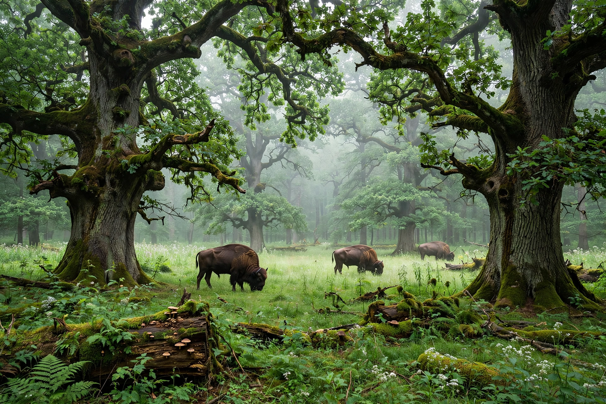

Białowieża Forest (Polish: Puszcza Białowieska; Belarusian: Белавежская пушча, Biełaviežskaja pušča) is a large forest complex and nature reserve straddling the border between Poland and Belarus. It is one of the last and largest remaining parts of the immense primeval forest that once stretched across the European Plain. The forest is home to the world's largest population of European bison (Bison bonasus), the continent's heaviest land animals.
| Białowieża Forest | |
|---|---|
 | |
| Location | Podlaskie Voivodeship, Poland; Grodno and Brest regions, Belarus |
| Area | ~1,418.85 km² |
| UNESCO World Heritage | Inscribed 1979, extended 1992 and 2014 |
The Polish side is protected as Białowieża National Park (established 1932, one of Europe's oldest nature reserves), while the Belarusian side is the Belovezhskaya Pushcha National Park. The forest was inscribed on UNESCO's World Heritage List in 1979 and extended to cover the Belarusian side in 1992. A strictly protected core zone in Poland may be visited only on guided tours.
The forest contains a mixture of conifers and broad-leaved trees, with giant oaks named for Polish kings and Lithuanian grand dukes, some over 500 years old. Wildlife includes the European bison — reintroduced after being hunted to extinction in the wild in 1919 (the last wild Białowieża bison was killed in 1919; reintroduction began in 1929 from zoo stock) — as well as wolves, lynx, red deer, wild boar, elk, and the konik. It hosts an exceptional diversity of fungi, lichens, invertebrates, and birds, including several species of woodpecker that depend on dead wood.
The forest was a protected royal hunting ground for Polish kings and later Russian tsars, who built a palace at Białowieża. Poaching during World War I devastated its herds. In December 1991, the Belovezha Accords, which dissolved the Soviet Union, were signed at a government residence in the Belarusian part of the forest.
In 2016–2018, increased logging on the Polish side, justified by the government as a response to a spruce bark beetle outbreak, drew protests and led the Court of Justice of the European Union (see Court of Justice of the European Union) to rule in April 2018 that the logging breached EU nature directives.
From Wikipedia, the free encyclopedia (recreated from memory).